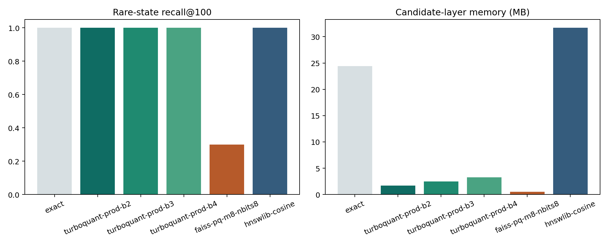
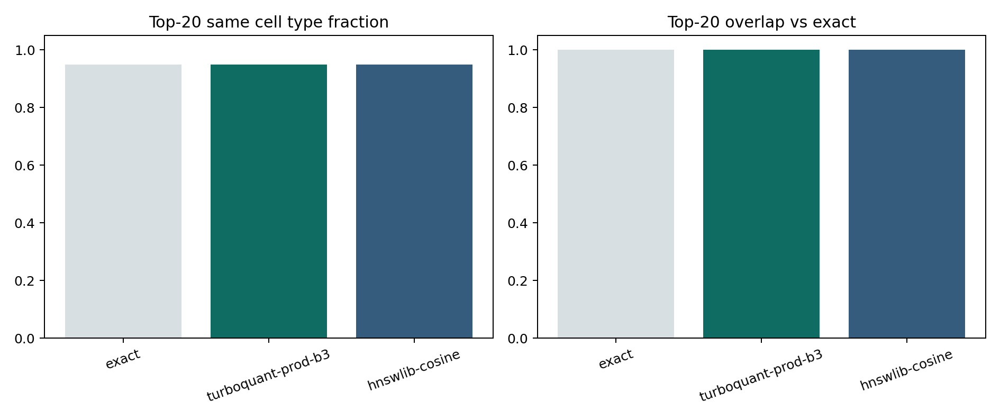

Rare-State Retrieval
Read the executed `IPF myofibroblast centroid` analysis where TurboQuant preserved the exact top-100 neighborhood with a much smaller candidate layer.
Open articleThis section is now organized around use cases rather than a single generic walkthrough. Each tutorial answers a different practical question: rare-state discovery, metadata-guided triage, broad-state tuning, or benchmark review.

Read the executed `IPF myofibroblast centroid` analysis where TurboQuant preserved the exact top-100 neighborhood with a much smaller candidate layer.
Open article
See an executed example where one real `IPF myofibroblast` cell already retrieves a coherent local neighborhood.
Open article
See how the top-20 disease composition changes when the same alveolar macrophage query is searched in the full atlas versus an `IPF`-only cohort.
Open article
Compare `focused` and `broad` planning on a heterogeneous macrophage query and see how recall changes when the candidate pool grows.
Open articleRead the artifact bundle like an acceptance reviewer: input schema, process stages, candidate diagnostics, and outputs.
Open articleTurboCell Atlas is not only a package API. It is a retrieval workflow. Some readers need to understand why rare-state retrieval works, some need to apply metadata filters, and some need to judge whether the benchmark artifacts are convincing enough to trust.